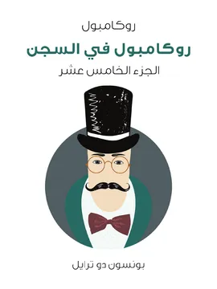

روكامبول في السجن: روكامبول (الجزء الخامس عشر)

قراءة عربية أصلية محددة النطاق في الصفحات 9 إلى 14 من ملف PDF المرتبط، وليست تلخيصا كاملا للكتاب. نناقش ما تدعمه هذه المقاطع فقط.
روكامبول يحول السجن إلى مسرحه
يفتتح الفصل وروكامبول في السجن يقلب أمره: الإرلنديون لن يخاطروا في سبيل إنقاذه لأنه ليس منهم أصلًا، فعليه الاعتماد على عصابته، وقد أرسل مس ألن إلى باريس تبحث عن ميلون ومرميس وفاندا. ثم يقع بصره على الجاسوس الذي زرعه الحاكم في زنزانته، فتخطر له خاطرة: إن أصلحت نفسه استخدمته فيما أريد وحميته من وصمة الجاسوسية. ويطلق نظراته الجاذبة التي عُرف بها، حتى إذا أيقن من تأثيرها أمسك بالرجل بلهجة السيادة المطلقة: ماذا تُدعى؟ برنيت. أين ولدت؟ في دبلن. ويهدم وهم الرجل: إن الإعدام لا يكون إلا بعد صدور الأحكام، ولم يحكموا عليك بشيء، بل وضعوك معي لمراقبتي. ثم يبسط له عيوب الجاسوسية وما تجده النفس من انبساط في خدمة المبادئ الشريفة، حتى جثا الرجل وقبل يده: لا أعلم من أنت، ولكني أعلم أنك من أهل السلطان على القلوب. وتنقطع زيارات الحاكم قنوطًا من جاسوسه، وتصل الجرائد، فيقرأ روكامبول أن مس ألن في باريس تحت حراسة شرطيين بأمر أبيها اللورد، فيدرك أن ميلون لم يعلم شيئًا، ولا بد من وسيلة تبلغ العصابة، فيلتفت إلى برنيت بالمفارقة الصادمة: أريد أن تخونني اليوم.
زاوية وحدود القراءة
قراءة موجزة من ص ٩ إلى ص ١٤ من أصل ١٤٢ صفحة، تعرض مشاهد السجن الأولى، لا الكتاب كاملًا.
الطبعة والقراءة
هذه الترجمة العربية صادرة ومتاحة مجانًا من مؤسسة هنداوي بشكل قانوني؛ حيث إن نص العمل الأصلي يقع في نطاق الملكية العامة تبعًا لقوانين الملكية الفكرية.
تنزيل PDF المجاني ↓ القراءة والمصدر الرسمي ↗